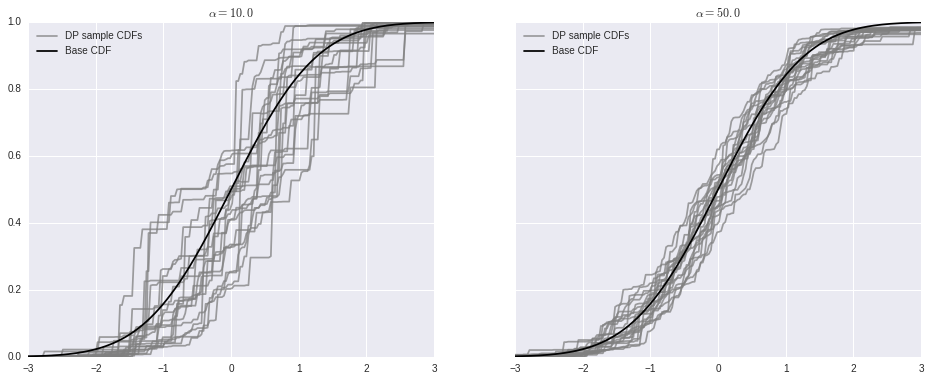
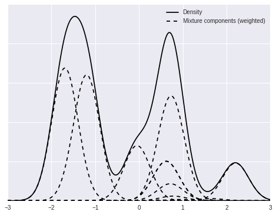
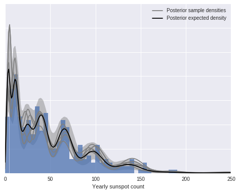
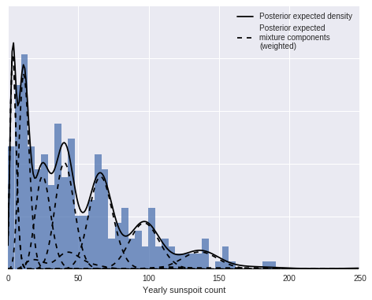

Dirichlet process mixtures for density estimation
Author: Austin Rochford
Dirichlet processes
The Dirichlet process is a flexible probability distribution over the space of distributions. Most generally, a probability distribution,
Here
Dirichlet processes have several properties that make then quite suitable to MCMC simulation.
-
The posterior given i.i.d. observations
$\omega_1, \ldots, \omega_n$ from a Dirichlet process$P \sim \textrm{DP}(\alpha, P_0)$ is also a Dirichlet process with$$P\ |\ \omega_1, \ldots, \omega_n \sim \textrm{DP}\left(\alpha + n, \frac{\alpha}{\alpha + n} P_0 + \frac{1}{\alpha + n} \sum_{i = 1}^n \delta_{\omega_i}\right),$$
where
-
The posterior predictive distribution of a new observation is a compromise between the base measure and the observations,
$$\omega\ |\ \omega_1, \ldots, \omega_n \sim \frac{\alpha}{\alpha + n} P_0 + \frac{1}{\alpha + n} \sum_{i = 1}^n \delta_{\omega_i}.$$
We see that the prior precision
-
Samples,
$P \sim \textrm{DP}(\alpha, P_0)$ , from a Dirichlet process are discrete with probability one. That is, there are elements$\omega_1, \omega_2, \ldots$ in$\Omega$ and weights$w_1, w_2, \ldots$ with$\sum_{i = 1}^{\infty} w_i = 1$ such that$$P = \sum_{i = 1}^\infty w_i \delta_{\omega_i}.$$ -
The stick-breaking process gives an explicit construction of the weights
$w_i$ and samples$\omega_i$ above that is straightforward to sample from. If$\beta_1, \beta_2, \ldots \sim \textrm{Beta}(1, \alpha)$ , then$w_i = \beta_i \prod_{j = 1}^{j - 1} (1 - \beta_j)$ . The relationship between this representation and stick breaking may be illustrated as follows:- Start with a stick of length one.
- Break the stick into two portions, the first of proportion
$w_1 = \beta_1$ and the second of proportion$1 - w_1$ . - Further break the second portion into two portions, the first of proportion
$\beta_2$ and the second of proportion$1 - \beta_2$ . The length of the first portion of this stick is$\beta_2 (1 - \beta_1)$ ; the length of the second portion is$(1 - \beta_1) (1 - \beta_2)$ . - Continue breaking the second portion from the previous break in this manner forever. If
$\omega_1, \omega_2, \ldots \sim P_0$ , then
$$P = \sum_{i = 1}^\infty w_i \delta_{\omega_i} \sim \textrm{DP}(\alpha, P_0).$$
We can use the stick-breaking process above to easily sample from a Dirichlet process in Python. For this example,
%matplotlib inline
from __future__ import division
from matplotlib import pyplot as plt
import numpy as np
import pymc3 as pm
import scipy as sp
import seaborn as sns
from statsmodels.datasets import get_rdataset
from theano import tensor as T
Couldn't import dot_parser, loading of dot files will not be possible.
blue = sns.color_palette()[0]
np.random.seed(462233) # from random.org
N = 20
K = 30
alpha = 2.
P0 = sp.stats.norm
We draw and plot samples from the stick-breaking process.
beta = sp.stats.beta.rvs(1, alpha, size=(N, K))
w = np.empty_like(beta)
w[:, 0] = beta[:, 0]
w[:, 1:] = beta[:, 1:] * (1 - beta[:, :-1]).cumprod(axis=1)
omega = P0.rvs(size=(N, K))
x_plot = np.linspace(-3, 3, 200)
sample_cdfs = (w[..., np.newaxis] * np.less.outer(omega, x_plot)).sum(axis=1)
fig, ax = plt.subplots(figsize=(8, 6))
ax.plot(x_plot, sample_cdfs[0], c='gray', alpha=0.75,
label='DP sample CDFs');
ax.plot(x_plot, sample_cdfs[1:].T, c='gray', alpha=0.75);
ax.plot(x_plot, P0.cdf(x_plot), c='k', label='Base CDF');
ax.set_title(r'$\alpha = {}$'.format(alpha));
ax.legend(loc=2);

As stated above, as
fig, (l_ax, r_ax) = plt.subplots(ncols=2, sharex=True, sharey=True, figsize=(16, 6))
K = 50
alpha = 10.
beta = sp.stats.beta.rvs(1, alpha, size=(N, K))
w = np.empty_like(beta)
w[:, 0] = beta[:, 0]
w[:, 1:] = beta[:, 1:] * (1 - beta[:, :-1]).cumprod(axis=1)
omega = P0.rvs(size=(N, K))
sample_cdfs = (w[..., np.newaxis] * np.less.outer(omega, x_plot)).sum(axis=1)
l_ax.plot(x_plot, sample_cdfs[0], c='gray', alpha=0.75,
label='DP sample CDFs');
l_ax.plot(x_plot, sample_cdfs[1:].T, c='gray', alpha=0.75);
l_ax.plot(x_plot, P0.cdf(x_plot), c='k', label='Base CDF');
l_ax.set_title(r'$\alpha = {}$'.format(alpha));
l_ax.legend(loc=2);
K = 200
alpha = 50.
beta = sp.stats.beta.rvs(1, alpha, size=(N, K))
w = np.empty_like(beta)
w[:, 0] = beta[:, 0]
w[:, 1:] = beta[:, 1:] * (1 - beta[:, :-1]).cumprod(axis=1)
omega = P0.rvs(size=(N, K))
sample_cdfs = (w[..., np.newaxis] * np.less.outer(omega, x_plot)).sum(axis=1)
r_ax.plot(x_plot, sample_cdfs[0], c='gray', alpha=0.75,
label='DP sample CDFs');
r_ax.plot(x_plot, sample_cdfs[1:].T, c='gray', alpha=0.75);
r_ax.plot(x_plot, P0.cdf(x_plot), c='k', label='Base CDF');
r_ax.set_title(r'$\alpha = {}$'.format(alpha));
r_ax.legend(loc=2);

Dirichlet process mixtures
For the task of density estimation, the (almost sure) discreteness of samples from the Dirichlet process is a significant drawback. This problem can be solved with another level of indirection by using Dirichlet process mixtures for density estimation. A Dirichlet process mixture uses component densities from a parametric family
To illustrate this model, we simulate draws from a Dirichlet process mixture with
N = 5
K = 30
alpha = 2
P0 = sp.stats.norm
f = lambda x, theta: sp.stats.norm.pdf(x, theta, 0.3)
beta = sp.stats.beta.rvs(1, alpha, size=(N, K))
w = np.empty_like(beta)
w[:, 0] = beta[:, 0]
w[:, 1:] = beta[:, 1:] * (1 - beta[:, :-1]).cumprod(axis=1)
theta = P0.rvs(size=(N, K))
dpm_pdf_components = f(x_plot[np.newaxis, np.newaxis, :], theta[..., np.newaxis])
dpm_pdfs = (w[..., np.newaxis] * dpm_pdf_components).sum(axis=1)
fig, ax = plt.subplots(figsize=(8, 6))
ax.plot(x_plot, dpm_pdfs.T, c='gray');
ax.set_yticklabels([]);

We now focus on a single mixture and decompose it into its individual (weighted) mixture components.
fig, ax = plt.subplots(figsize=(8, 6))
ix = 1
ax.plot(x_plot, dpm_pdfs[ix], c='k', label='Density');
ax.plot(x_plot, (w[..., np.newaxis] * dpm_pdf_components)[ix, 0],
'--', c='k', label='Mixture components (weighted)');
ax.plot(x_plot, (w[..., np.newaxis] * dpm_pdf_components)[ix].T,
'--', c='k');
ax.set_yticklabels([]);
ax.legend(loc=1);

Sampling from these stochastic processes is fun, but these ideas become truly useful when we fit them to data. The discreteness of samples and the stick-breaking representation of the Dirichlet process lend themselves nicely to Markov chain Monte Carlo simulation of posterior distributions. We will perform this sampling using pymc3.
Our first example uses a Dirichlet process mixture to estimate the density of waiting times between eruptions of the Old Faithful geyser in Yellowstone National Park.
old_faithful_df = get_rdataset('faithful', cache=True).data[['waiting']]
For convenience in specifying the prior, we standardize the waiting time between eruptions.
old_faithful_df['std_waiting'] = (old_faithful_df.waiting - old_faithful_df.waiting.mean()) / old_faithful_df.waiting.std()
old_faithful_df.head()
| waiting | std_waiting | |
|---|---|---|
| 0 | 79 | 0.596025 |
| 1 | 54 | -1.242890 |
| 2 | 74 | 0.228242 |
| 3 | 62 | -0.654437 |
| 4 | 85 | 1.037364 |
fig, ax = plt.subplots(figsize=(8, 6))
n_bins = 20
ax.hist(old_faithful_df.std_waiting, bins=n_bins, color=blue, lw=0, alpha=0.5);
ax.set_xlabel('Standardized waiting time between eruptions');
ax.set_ylabel('Number of eruptions');

Observant readers will have noted that we have not been continuing the stick-breaking process indefinitely as indicated by its definition, but rather have been truncating this process after a finite number of breaks. Obviously, when computing with Dirichlet processes, it is necessary to only store a finite number of its point masses and weights in memory. This restriction is not terribly onerous, since with a finite number of observations, it seems quite likely that the number of mixture components that contribute non-neglible mass to the mixture will grow slower than the number of samples. This intuition can be formalized to show that the (expected) number of components that contribute non-negligible mass to the mixture approaches
There are various clever Gibbs sampling techniques for Dirichlet processes that allow the number of components stored to grow as needed. Stochastic memoization is another powerful technique for simulating Dirichlet processes while only storing finitely many components in memory. In this introductory example, we take the much less sophistocated approach of simple truncating the Dirichlet process components that are stored after a fixed number, pymc3's (current) technical limitations. Ohlssen, et al. provide justification for truncation, showing that
Our Dirichlet process mixture model for the standardized waiting times is
Note that instead of fixing a value of
We now construct this model using pymc3.
N = old_faithful_df.shape[0]
K = 30
with pm.Model() as model:
alpha = pm.Gamma('alpha', 1., 1.)
beta = pm.Beta('beta', 1., alpha, shape=K)
w = pm.Deterministic('w', beta * T.concatenate([[1], T.extra_ops.cumprod(1 - beta)[:-1]]))
component = pm.Categorical('component', w, shape=N)
tau = pm.Gamma('tau', 1., 1., shape=K)
lambda_ = pm.Uniform('lambda', 0, 5, shape=K)
mu = pm.Normal('mu', 0, lambda_ * tau, shape=K)
obs = pm.Normal('obs', mu[component], lambda_[component] * tau[component],
observed=old_faithful_df.std_waiting.values)
Applied log-transform to alpha and added transformed alpha_log to model.
Applied logodds-transform to beta and added transformed beta_logodds to model.
Applied log-transform to tau and added transformed tau_log to model.
Applied interval-transform to lambda and added transformed lambda_interval to model.
We sample from the posterior distribution 20,000 times, burn the first 10,000 samples, and thin to every tenth sample.
with model:
step1 = pm.Metropolis(vars=[alpha, beta, w, lambda_, tau, mu, obs])
step2 = pm.ElemwiseCategoricalStep([component], np.arange(K))
trace_ = pm.sample(20000, [step1, step2])
trace = trace_[10000::10]
[-----------------100%-----------------] 20000 of 20000 complete in 133.1 sec
The posterior distribution of
pm.traceplot(trace, varnames=['alpha']);

To verify that our truncation point is not biasing our results, we plot the distribution of the number of mixture components used.
n_components_used = np.apply_along_axis(lambda x: np.unique(x).size, 1, trace['component'])
fig, ax = plt.subplots(figsize=(8, 6))
bins = np.arange(n_components_used.min(), n_components_used.max() + 1)
ax.hist(n_components_used + 1, bins=bins, normed=True, lw=0, alpha=0.75);
ax.set_xticks(bins + 0.5);
ax.set_xticklabels(bins);
ax.set_xlim(bins.min(), bins.max() + 1);
ax.set_xlabel('Number of mixture components used');
ax.set_ylabel('Posterior probability');

We see that the vast majority of samples use four mixture components, and the largest number of mixture components used by any sample is nine. Since we truncated our Dirichlet process mixture at thirty components, we can be quite sure that truncation did not bias our results.
We now compute and plot our posterior density estimate.
post_pdf_contribs = sp.stats.norm.pdf(np.atleast_3d(x_plot),
trace['mu'][:, np.newaxis, :],
1. / np.sqrt(trace['lambda'] * trace['tau'])[:, np.newaxis, :])
post_pdfs = (trace['w'][:, np.newaxis, :] * post_pdf_contribs).sum(axis=-1)
post_pdf_low, post_pdf_high = np.percentile(post_pdfs, [2.5, 97.5], axis=0)
fig, ax = plt.subplots(figsize=(8, 6))
n_bins = 20
ax.hist(old_faithful_df.std_waiting.values, bins=n_bins, normed=True,
color=blue, lw=0, alpha=0.5);
ax.fill_between(x_plot, post_pdf_low, post_pdf_high,
color='gray', alpha=0.45);
ax.plot(x_plot, post_pdfs[0],
c='gray', label='Posterior sample densities');
ax.plot(x_plot, post_pdfs[::100].T, c='gray');
ax.plot(x_plot, post_pdfs.mean(axis=0),
c='k', label='Posterior expected density');
ax.set_xlabel('Standardized waiting time between eruptions');
ax.set_yticklabels([]);
ax.set_ylabel('Density');
ax.legend(loc=2);

As above, we can decompose this density estimate into its (weighted) mixture components.
fig, ax = plt.subplots(figsize=(8, 6))
n_bins = 20
ax.hist(old_faithful_df.std_waiting.values, bins=n_bins, normed=True,
color=blue, lw=0, alpha=0.5);
ax.plot(x_plot, post_pdfs.mean(axis=0),
c='k', label='Posterior expected density');
ax.plot(x_plot, (trace['w'][:, np.newaxis, :] * post_pdf_contribs).mean(axis=0)[:, 0],
'--', c='k', label='Posterior expected mixture\ncomponents\n(weighted)');
ax.plot(x_plot, (trace['w'][:, np.newaxis, :] * post_pdf_contribs).mean(axis=0),
'--', c='k');
ax.set_xlabel('Standardized waiting time between eruptions');
ax.set_yticklabels([]);
ax.set_ylabel('Density');
ax.legend(loc=2);

The Dirichlet process mixture model is incredibly flexible in terms of the family of parametric component distributions
sunspot_df = get_rdataset('sunspot.year', cache=True).data
sunspot_df.head()
| time | sunspot.year | |
|---|---|---|
| 0 | 1700 | 5 |
| 1 | 1701 | 11 |
| 2 | 1702 | 16 |
| 3 | 1703 | 23 |
| 4 | 1704 | 36 |
For this problem, the model is
N = sunspot_df.shape[0]
K = 30
with pm.Model() as model:
alpha = pm.Gamma('alpha', 1., 1.)
beta = pm.Beta('beta', 1, alpha, shape=K)
w = pm.Deterministic('beta', beta * T.concatenate([[1], T.extra_ops.cumprod(1 - beta[:-1])]))
component = pm.Categorical('component', w, shape=N)
mu = pm.Uniform('mu', 0., 300., shape=K)
obs = pm.Poisson('obs', mu[component], observed=sunspot_df['sunspot.year'])
Applied log-transform to alpha and added transformed alpha_log to model.
Applied logodds-transform to beta and added transformed beta_logodds to model.
Applied interval-transform to mu and added transformed mu_interval to model.
with model:
step1 = pm.Metropolis(vars=[alpha, beta, w, mu, obs])
step2 = pm.ElemwiseCategoricalStep([component], np.arange(K))
trace_ = pm.sample(20000, [step1, step2])
[-----------------100%-----------------] 20000 of 20000 complete in 116.3 sec
trace = trace_[10000::10]
For the sunspot model, the posterior distribution of
pm.traceplot(trace, varnames=['alpha']);

Indeed, we see that there are (on average) about ten to fifteen components used by this model.
n_components_used = np.apply_along_axis(lambda x: np.unique(x).size, 1, trace['component'])
fig, ax = plt.subplots(figsize=(8, 6))
bins = np.arange(n_components_used.min(), n_components_used.max() + 1)
ax.hist(n_components_used + 1, bins=bins, normed=True, lw=0, alpha=0.75);
ax.set_xticks(bins + 0.5);
ax.set_xticklabels(bins);
ax.set_xlim(bins.min(), bins.max() + 1);
ax.set_xlabel('Number of mixture components used');
ax.set_ylabel('Posterior probability');

We now calculate and plot the fitted density estimate.
x_plot = np.arange(250)
post_pmf_contribs = sp.stats.poisson.pmf(np.atleast_3d(x_plot),
trace['mu'][:, np.newaxis, :])
post_pmfs = (trace['beta'][:, np.newaxis, :] * post_pmf_contribs).sum(axis=-1)
post_pmf_low, post_pmf_high = np.percentile(post_pmfs, [2.5, 97.5], axis=0)
fig, ax = plt.subplots(figsize=(8, 6))
ax.hist(sunspot_df['sunspot.year'].values, bins=40, normed=True, lw=0, alpha=0.75);
ax.fill_between(x_plot, post_pmf_low, post_pmf_high,
color='gray', alpha=0.45)
ax.plot(x_plot, post_pmfs[0],
c='gray', label='Posterior sample densities');
ax.plot(x_plot, post_pmfs[::200].T, c='gray');
ax.plot(x_plot, post_pmfs.mean(axis=0),
c='k', label='Posterior expected density');
ax.set_xlabel('Yearly sunspot count');
ax.set_yticklabels([]);
ax.legend(loc=1);

Again, we can decompose the posterior expected density into weighted mixture densities.
fig, ax = plt.subplots(figsize=(8, 6))
ax.hist(sunspot_df['sunspot.year'].values, bins=40, normed=True, lw=0, alpha=0.75);
ax.plot(x_plot, post_pmfs.mean(axis=0),
c='k', label='Posterior expected density');
ax.plot(x_plot, (trace['beta'][:, np.newaxis, :] * post_pmf_contribs).mean(axis=0)[:, 0],
'--', c='k', label='Posterior expected\nmixture components\n(weighted)');
ax.plot(x_plot, (trace['beta'][:, np.newaxis, :] * post_pmf_contribs).mean(axis=0),
'--', c='k');
ax.set_xlabel('Yearly sunspoit count');
ax.set_yticklabels([]);
ax.legend(loc=1);

This example first appeared here.